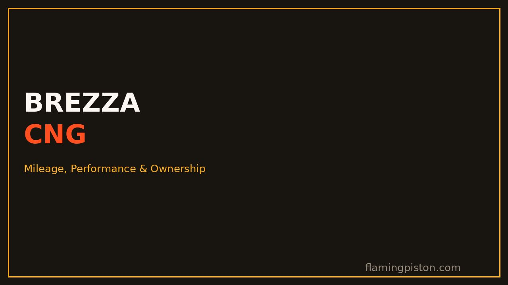
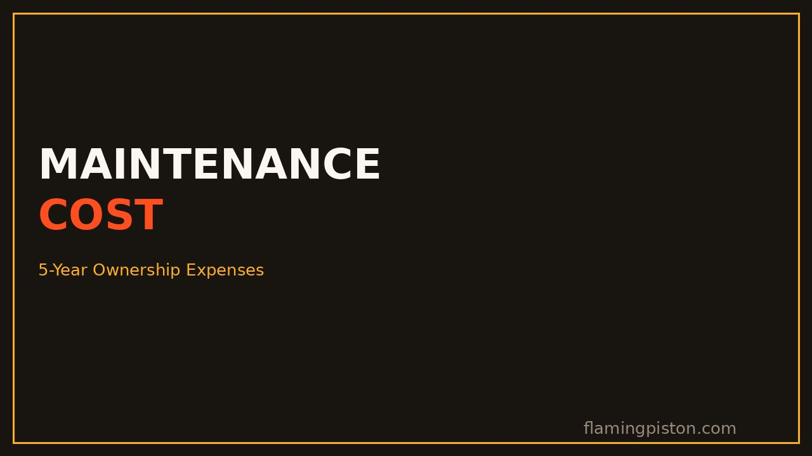

Maruti Brezza Maintenance Cost: Service Schedule & 5-Year Ownership Expenses

Image: FlamingPiston
Maruti's service network and low parts costs are a big part of the Brezza's appeal, but "cheap to maintain" gets thrown around so casually in this segment that it stops meaning anything. Here's what independent estimates and owner-reported bills actually put the Brezza's running costs at over a realistic ownership period.
The Honest Number
Estimates for a 5-year, roughly 50,000km service cost cluster between ₹25,000 and ₹35,000 across independent sources, before fuel. That's a genuinely low figure for the segment, but it assumes you stick to Maruti's recommended 10,000km/12-month interval and don't defer services, which is when small issues turn into bigger, pricier ones.
Service Schedule: What's Actually Due, and When
| Service | Interval | What's typically covered |
|---|---|---|
| 1st & 2nd service | ~1,000km & 10,000km | Mostly inspection, largely labour-free |
| Routine service | Every 10,000km / 12 months | Oil, oil filter, air filter, brake check, general inspection |
| Major service | ~30,000-40,000km | Spark plugs, cabin filter, deeper inspection, wear-item replacement |
The first two services are the cheapest by a wide margin, largely inspection-based with minimal labour charged. Costs step up from the third service onward as consumables genuinely start needing replacement rather than just checking. Sticking to the interval matters more than the number itself: delaying oil changes past 12,000km is where independent guides consistently flag accelerated wear, not from the 10,000km mark itself.
What a Typical Bill Actually Looks Like
Individual paid services at authorised centres are commonly estimated at ₹3,500 to ₹6,500, depending on which service it is and what's due at that interval. Major services with spark plug or filter replacement land at the higher end of that range; routine oil-and-check visits sit at the lower end. Independent doorstep-service providers claim to undercut authorised centre pricing by roughly 30%, though using them can affect warranty terms, so weigh that trade-off before switching away from Maruti's own network, particularly while the car is still under warranty.
Petrol vs CNG: The Real Cost Difference
CNG ownership adds a modest, predictable service premium, roughly ₹800 to ₹1,200 extra per visit for filter and valve checks specific to the CNG system. That's a small number against CNG's fuel-cost advantage: independent running-cost breakdowns put Brezza CNG at roughly ₹2.50-3.60 per km against ₹6.50-7 per km on petrol at typical fuel prices, which means the small service premium is recovered almost immediately once you're actually driving on gas rather than petrol mode. If you're covering serious monthly distance, CNG's fuel savings dwarf anything you'll spend on the extra service checks. For the full running-cost and ownership breakdown of the CNG version specifically, see our Brezza CNG guide.
Where Costs Actually Creep In
Routine servicing isn't where Brezza owners report surprises. It's wear-and-tear items outside the standard schedule: rear suspension noise on broken roads (stabilizer link replacement, commonly cited around ₹1,500-2,500), AC blower motor wear after roughly 40,000km, and stone-chip paint touch-ups on the front bumper from highway driving. None of these are Brezza-specific problems, they're generic compact-SUV wear patterns, but budgeting a small buffer beyond the official service schedule is more realistic than assuming the sticker price is the whole story.
Manual vs Automatic: Does Gearbox Choice Change the Bill?
Not meaningfully, for routine servicing. The 6-speed torque-converter automatic doesn't carry a dramatically different service schedule or cost from the manual in most estimates, the bigger differences between them are upfront price and real-world fuel economy, not the maintenance bill itself. If you're deciding between the two, our Brezza Automatic guide covers the driving experience and price premium in full.
Our Take
Across every independent estimate we cross-checked, the Brezza lands as a genuinely low-maintenance-cost compact SUV, backed by Maruti's dense service network and simple, well-understood K-series engines with no complex diesel or hybrid hardware to inflate parts costs. The number to actually budget: roughly ₹5,000-7,000 a year on average for routine servicing, plus a modest CNG premium if you go that route, plus a small buffer for wear items that show up outside the official schedule. That's a manageable, predictable cost profile, not a hidden expense trap.
FAQs
How much does it cost to service a Maruti Brezza?
Typical estimates put a 5-year service cost between roughly ₹25,000 and ₹35,000, depending on the source and city. Individual paid services generally run ₹3,500 to ₹6,500 at authorised centres, with the first one or two services covering mostly labour-free inspection and consumables.
Is the Brezza CNG more expensive to service than petrol?
Slightly. Budget an extra ₹800 to ₹1,200 per service for CNG-specific filter and valve checks. That extra cost is consistently smaller than the fuel savings CNG delivers over the same distance.
How often does the Brezza need servicing?
Every 10,000km or 12 months, whichever comes first, per Maruti's recommended schedule.
Is the automatic more expensive to maintain than the manual?
Not significantly for routine servicing. The bigger cost difference between the two is upfront purchase price and slightly lower real-world fuel economy on the automatic, not the service bill itself.
Sources: ICICI Lombard; AckoDrive; ZigWheels; CarDekho; Spinny; Cars24; Ride N Repair 2026 service cost guides.
More in the Brezza series: 2026 Maruti Brezza Review · Real-World Mileage · Variants Explained · Automatic Review · vs Tata Nexon · vs Fronx · Turbo vs 1.5 Petrol · CNG Review · Boot Space & Practicality · Safety & Bharat NCAP · Pros & Cons